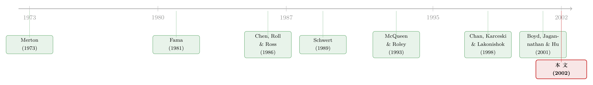

宏观因子从未缺席，它只是躲进了波动率里
本文读的是 Flannery & Protopapadakis (2002, Review of Financial Studies)：宏观经济消息「不影响」股市，很可能只是因为前人一直在错的地方找它——把目光从收益率的均值移到它的条件方差，再用一个 GARCH 模型同时盯住这两处，沉睡了十几年的宏观因子立刻现身。作者从 17 个宏观公告序列里筛出 6 个「候选因子」：三个名义变量（CPI、PPI、货币供给）和三个实体变量（贸易差额、就业报告、新屋开工），而工业产出、GNP 这些「教科书级」的总量指标反而榜上无名。
1 一道令人难堪的缺口
先说一个几乎所有人都同意、却几乎没人能证明的命题。
按照多因子资产定价理论，任何会改变未来投资机会集、或改变消费水平的变量，都可能是均衡里被定价的风险因子 [Merton (1973)、Breeden (1979)]；承担这类不可分散风险的证券，应当在风险厌恶的经济里赚到风险溢价 [Ross (1976)]。宏观经济变量简直是为这个角色量身定做的——一则通胀数据、一份就业报告，会同时拨动成千上万家公司的现金流，也会改写风险调整后的贴现率。于是结论顺理成章：宏观经济，理应在股市里留下指纹。
可问题在于，几十年来人们翻遍了股市，却几乎找不到这枚指纹。
这种尴尬，Chen, Roll, and Ross（下称 CRR）在 1986 年说得最直白：
系统性「状态变量」在理论上至关重要，可我们对它们的身份却一无所知，二者之间存在着一道相当令人难堪的缺口。资产价格的共动暗示着底层有外生的力量在牵引，但我们至今没能确定，究竟是哪些经济变量（如果真有的话）在负责。
到了 1998 年，Chan, Karceski, and Lakonishok 干脆把话挑明：宏观因子表现糟糕，「说得不客气一点，在多数情形下，它们跟一串随机数字一样，对捕捉收益共动毫无用处」。
这就是本文出发的地方。真的是宏观经济不影响股市吗？还是我们一直拿错了尺子？
2 一个被「平均」抹平的系数
要回答这个问题，得先看清前人是怎么找的。
传统做法朴素而直接：把市场月收益率 \(r_t\) 回归到某个宏观因子的「意外」（surprise）\(z_t\) 上。所谓意外，就是实际值减去事前预期，\(z_t \equiv Z_t - E_{t-1}[Z_t]\)。单因子情形下：
$$r_t = E_{t-1}[r_t] + \beta\, z_t + u_t$$
只要 \(\beta\) 显著，就说明这个宏观变量和市场组合的价值之间存在可靠关联。可这套方法，在总量股市收益上「出奇地不成功」。
接着，一个自然的问题是：为什么不成功？作者列了几条嫌疑，前几条是老生常谈——「市场组合」漏掉了不可交易的财富（误差变量把 \(\beta\) 往零方向压）、月度数据里混进了太多别的信息、预期 \(E_{t-1}[Z_t]\) 测得不准。但真正关键的一条，是最后一条：固定系数。
假设真实世界里这个系数本身是会随时间变的。把模型的核心剥到只剩：
$$r_t = \beta_t\, z_t + u_t$$
这里 \(\beta_t\)、\(z_t\)、\(u_t\) 相互独立。如果你硬用一个固定系数模型去估它，估出来的 \(\hat\beta\) 大约就是 \(\beta_t\) 的均值 \(E[\beta_t]\)。麻烦就在这儿了：一个时而为正、时而为负、长期均值接近零的因子，会被这台「求平均」的机器判成「不显著」。 McQueen and Roley (1993) 早就提醒过——同样一份就业报告，在经济走出衰退时是利好，逼近周期顶点时却是利空。把这两段强行平均，自然什么也剩不下。
那这个被抹平的信号，真的就彻底消失了吗？
3 真正关键的一步：去波动率里找它
没有。它只是换了个地方藏身。
这是全文最漂亮的一步推理。既然固定系数模型把时变的 \(\beta_t\) 错估成了常数 \(\hat\beta\)，那么它算出来的残差就是
$$\hat u_t = u_t + (\beta_t - \hat\beta)\, z_t$$
对它求方差，在三者独立、交叉项期望为零的条件下，得到：
$$\hat{\sigma}^2_{u'_t} = \sigma_u^2 + E_{t-1}\!\big[(\beta_t-\hat\beta)^2 z_t^2\big] + E_{t-1}\!\big[u_t(\beta_t-\hat\beta)z_t\big]$$
请盯住中间那一项。在没有宏观公告的日子，\(z_t = 0\)，残差方差就退回到平静的 \(\sigma_u^2\)；可一旦公告发布，\(z_t \neq 0\) 且一般 \(\beta_t \neq \hat\beta\)，残差方差就会（弱）超过 \(\sigma_u^2\)。
换句话说：即便我们说不清一则公告把股价推高还是压低，它都会在公告当天留下一道「异常放大的波动」。 信号没有死，它从一阶矩（均值）漏进了二阶矩（方差）。这正呼应了 Castanias (1979)、Ross (1989) 的洞见——重要的消息总伴随着绝对值异常大的收益。
于是补救的办法呼之欲出：在条件方差里塞一个公告日哑变量 \(D_t\)，
$$h_t^2 = h_0^2 + \lambda\, D_t$$
只要 \(\lambda\) 显著为正，就说明这个变量对收益有真实但时变的影响。而且因为公告日期是事先排定的，把正的 \(\lambda\) 解读成「市场对当天更高波动的理性、事前预期」完全说得通。
到这里，整篇文章的方法论内核已经成型：与其在均值里苦苦寻找一个会变号的系数，不如去条件方差里捕捉它的「身影」。（用波动率给信息当尺子，这条思路本身也耐人寻味，可参见《油价的「波动」，比油价本身更早预言衰退》。）
4 模型：把宏观公告同时写进均值和方差
剩下的就是把这套直觉装进一个能落地的 GARCH 模型。作者在标准 GARCH$(1,1)$ 上做扩展，让实现收益和它的条件波动都随 17 个宏观序列的公告而动。
收益生成方程把因子意外等同于 17 个宏观公告序列的「意外」成分：
$$r_t = E_{t-1}[r_t] + \sum_{n=1}^{17} \beta_n\big[F_{nt} - E_{t-1}[F_{nt}]\big] + u_t$$
期望收益 \(E_{t-1}[r_t]\) 则挂在一组预定变量上——六个被前人证明能预测收益的金融变量 \(X_{t-1}\)（三月期国库券利率 TB3M、垃圾债溢价 JPRE、期限结构溢价 TPRE、滞后自身收益、股息价格比 DIVPRI、市值对数 LMV），加上星期哑变量和「一月效应」哑变量：
$$E_{t-1}[r_t] = r_0 + \phi\, X_{t-1} + \sum_{w=1}^{4}\delta_w DW_{wt} + \sum_{k=1}^{6}\eta_k DJ_{kt}$$
误差项写成 \(u_t \equiv h_t\varepsilon_t\)，\(\varepsilon_t \sim N(0,1)\) 且独立同分布。核心在条件方差。作者借鉴 Andersen and Bollerslev (1997)、Jones, Lamont, and Lumsdaine (1998) 的思路，让计划内的宏观公告对条件方差产生乘性影响：
其中那个乘性因子 \(\Phi_t\) 取指数形式，既保证条件波动恒为正，又让哑变量系数的符号不受约束：
$$\Phi_t = \exp\!\Big(\sum_{w=1}^{4}\zeta_w DW_{wt} + \zeta_r\, PRE_t + \zeta_s\, POST_t + \sum_{n=1}^{17} f_n\, DF_{nt}\Big)$$
这里的 \(f_n\) 就是每个宏观公告对波动率的影响，也是全文要拷问的主角。用 \(\Phi_{t-1}\) 去除滞后方差 \(h_{t-1}^2\) 这一手很讲究：它确保那些完全可预期的事件（星期几、节假日、排定好的公告）只在当天掀起波澜，而不会持久地污染未来的波动——毕竟，理性的市场不该让一个早就知道会发生的事产生持续效应 [Andersen (1996)]。
参数通过极大化正态对数似然估出，作者用递归方法迭代 \(h_t\) 至收敛。
（GARCH 这种「波动会扎堆」的设定从何而来、能否回到投资者偏好里去理解，是另一个有意思的话题，可参见《GARCH 从哪儿来？——把「波动会扎堆」这件事，还给投资者的情绪》。）
5 数据
- 收益：CRSP 的 NYSE-AMEX-NASDAQ 价值加权市场指数日收益（收盘到收盘），1980 年 1 月至 1996 年底。用日度而非月度，正是为了精确锁定投资者「哪一天」学到了宏观数值。
- 宏观公告：17 个宏观序列的公告日期、公告值，以及 MMS International（现属标普）收集的货币市场经济学家调查预期作为「意外」的基准——这比 VAR 之类的统计预期更贴近公告当下的市场情绪，也更符合「市场在公告日真正掌握的信息」。
- 由于一个序列（CCRED）没有预期数据，另有两对序列总是同时公布（PINC 与 PCONS、EMPNF 与 UNEM），最终实际估计的是 16 个意外和 15 个公告哑变量。
- 货币供给（M1/M2）与消费信贷在股市收盘后公布，被「前移」一个交易日，与它们本该影响的收益对齐；落在休市日的公告同样顺移。
- 所有估计都剔除了 11 个交易日——1987 年股灾及 1989 年 10 月的急跌——因为很难相信任何一则宏观公告造成了那些巨幅波动。
6 主要结果：六个现身的因子
把模型跑起来，沉睡的因子终于露面。作者从 17 个序列里筛出 6 个候选风险因子：
- 三个名义变量：CPI、PPI、货币供给（M1 或 M2）；
- 三个实体变量：就业报告（Employment Report）、贸易差额（Balance of Trade）、新屋开工（Housing Starts）。
更精细的分工很有意思：
只有货币供给同时影响收益的水平和波动。除货币供给之外，另两个名义变量只影响收益水平；而三个实体变量只影响条件波动。
这恰恰印证了第 3 节的推理——实体经济变量的效应是时变、会变号的，所以它们在均值里隐身，却在方差里发声。
反过来，那些「教科书级」的总量指标集体失声：工业产出（Industrial Production）、个人收入、销售额，对收益、条件波动、交易量都没有显著影响；实际 GNP 的意外甚至与更低的条件波动相伴，且对交易量毫无作用。这对 CRR 把工业产出当作头号候选因子的旧结论，是个不小的反讽。
那么这 6 个因子是真信号，还是 GARCH 模型自己「挤」出来的统计幻觉？作者补了一个独立的旁证：交易量。如果这些公告真给市场送来了重要消息，它们就该伴随更高的交易量。结果，增高的交易量只与那 6 个在收益模型里被点名的序列相关——前后对得上。
作者还做了三组稳健性检验：(i) 按经济活动水平把样本切成三个「景气区制」；(ii) 同时估计三个相邻子期的模型；(iii) 用六个工具变量逐一直接建模系数的非线性。在所有变体里，这 6 个公告变量都显著地影响股市收益。
7 文献脉络
把这条线索拉直，故事大致是这样的。
最早的一批工作锁定的是名义变量：Bodie (1976)、Fama (1981)、Geske and Roll (1983)、Pearce and Roley (1983, 1985) 一致发现通胀与货币增长负向作用于股价。真正把「宏观因子」推上多因子定价舞台的是 CRR——Chen, Roll, and Ross (1986) 提出五个候选因子（工业产出增长、预期通胀、非预期通胀、违约溢价、期限结构溢价），并断言违约与期限溢价被定价、工业产出是强候选。
但质疑紧随其后。Shanken and Weinstein (1990) 指出 CRR 的结论高度依赖检验组合的构造方式，修正标准误后宏观因子的统计重要性进一步缩水。Schwert (1989) 用一套很不一样的方法发现，与其说宏观波动导致金融收益不稳，不如说「金融资产波动帮助预测未来的宏观波动」——因果方向甚至可能是反的。到 Chan, Karceski, and Lakonishok (1998)，悲观情绪达到顶点。
转机来自时变这条线。McQueen and Roley (1993) 把失败归咎于固定系数模型，让每个序列的效应随景气状态而变，结果在区制模型里六个序列显著（固定系数模型里只有两个）。Boyd, Jagannathan, and Hu (2001) 进一步证明失业率公告对 S&P 500 的影响随商业周期反号。本文正是站在这条「时变」脉络的延长线上，但更进一步——不止承认效应时变，而是干脆把这种时变搬进条件方差里去识别它。

8 评论与延伸（Q&A + 研究方向）
（a）几个可能的疑问
Q：这篇文章证明了这 6 个变量是「被定价」的风险因子吗？
没有，作者很诚实地说了这一点。它只证明了这 6 个宏观公告与收益的水平或波动显著相关，是「候选因子」（factor candidates）。要论证它们在均衡里真正被定价（即承担其风险能赚到溢价），还需要进一步的横截面检验。本文的贡献是「在哪里继续找」，而非「找到了」。
Q：为什么实体变量只在波动里出现，而不在均值里？
这正是模型的核心逻辑。实体经济变量（就业、贸易、新屋开工）的效应随商业周期变号——衰退末期的强就业是利好，扩张顶端却是利空。固定系数模型把正负效应平均成接近零，于是它们在收益均值上「隐形」；但无论符号如何，公告当天的绝对波动都会放大，所以它们在条件方差里现身。
Q：把信号塞进方差，会不会只是「公告日波动本来就大」的同义反复？
这是最该担心的一点。作者的防线有两道：其一，模型用 \(\Phi_{t-1}\) 除掉滞后方差，把日历/公告这类可预期事件的暂时性波动与持久冲击分开，避免机械的波动聚集被误读；其二，也是更有说服力的，是交易量旁证——若只是无意义的波动，不该系统性地伴随更高交易量，而结果恰恰只有那 6 个序列同时点亮了波动与交易量。
Q：为什么用调查预期，而不是统计模型（如 VAR）来算「意外」？
因为 VAR 之类的统计预期往往用到修订后的数据序列，而这些在公告当日市场根本看不到；而且统计预期测不准会把 \(\beta\) 往零方向压。MMS 收集的货币市场经济学家调查，反映的是公告前夕市场真实持有的信息，更贴近「意外」的本义。
Q：剔除 1987 股灾那 11 天，会不会是在「挑数据」？
有这个嫌疑，但理由站得住：很难相信任何一则排定的宏观公告造成了 1987、1989 那种量级的崩盘，留着它们只会让极端离群点主导估计。这属于减少异常值干扰的常规处理，而非为了凑结论而删样本。
Q：这和「股市能不能预测宏观经济」是一回事吗？
不是，甚至方向相反。Schwert (1989)、Fama (1990) 关心的是股价预测未来宏观（因为股价反映预期现金流）。本文关心的是宏观公告的意外如何当期冲击股市。两条线互补：一个看股市的「先知」属性，一个看股市对消息的「即时反应」。
（b）几个可能的研究问题与提案
1. 把「去二阶矩里找」搬到公司债
【经济故事】公司债收益对宏观消息的反应长期被认为「迟钝」，但这会不会也是「只盯均值」的错觉？信用利差对通胀、就业的反应很可能时变且非线性——衰退中坏消息放大违约担忧，扩张中却无关痛痒。 【可行性】中高。用 TRACE 的日内/日度成交构造债券收益与已实现波动，套用本文的 GARCH-公告框架，按景气区制切分。难点在 TRACE 早期成交稀疏、价格离散，需用对离散稳健的波动估计。
2. 外资持有人会放大美国宏观公告的冲击吗？
【经济故事】若外资对美国宏观数据的解读、风险偏好与本土投资者不同，外资持有比例高的债券，在 CPI、就业报告公告日可能呈现更大的波动或交易量。这能把「外资是稳定器还是放大器」的争论，落到一个干净的高频事件上。 【可行性】中。需 eMAXX/Morningstar 之类的持有人数据与 TRACE 合并，识别上可比较高/低外资持有组在公告窗口的波动差异。难点是持有数据为季度快照、与日度公告对齐有误差。
3. 宏观公告的「波动」是否转化为流动性的收缩？
【经济故事】本文止于波动与交易量，但波动放大的另一面常是买卖价差走阔、深度变浅。若 6 个候选因子的公告日同时见证流动性收紧，那它们的「风险」就有了一个微观结构的载体。 【可行性】高。股票用 TAQ、公司债用 TRACE，在公告窗口测价差、深度、价格冲击（如 Amihud 比率），与非公告日做事件研究式对照即可。
9 我的判断
这篇文章的真正贡献，不在于它新发现了哪个因子，而在于它换了一个寻找因子的地方。当整片文献在收益均值里反复淘洗、几近绝望时，作者用一个朴素却深刻的代数事实——时变系数会把信号从一阶矩漏进二阶矩——把搜索从均值挪到了条件方差，于是宏观因子「死而复生」。这种「换一把尺子，旧问题就被重新审判」的范式转换，是经验金融里最有生命力的一类工作。
对识别，我有两点保留。其一，全文的结论高度依赖 GARCH 设定本身：哪些进均值、哪些进方差、\(\Phi_t\) 取什么函数形式，都会影响最终被点名的因子清单——作者承认主结果对设定不敏感，但「6 个因子」这个具体名单的稳健性，仍系于模型形式。其二，也是更根本的，「显著影响波动」与「被定价」之间隔着一道作者自己也没跨过的鸿沟：一个变量在公告日掀起波澜，未必意味着承担它的风险能换来溢价。本文老老实实地把自己定位为「继续寻找被定价因子的好起点」，这份克制值得尊重，却也提醒我们别把候选因子当成既定结论。
后续我最想看到的，是有人接着把这 6 个候选因子拖到横截面定价的检验台上——它们能解释收益的截面差异吗？溢价是正是负、随周期如何变？以及，把同一套「去波动率里找」的逻辑，系统地移植到公司债与信用市场（HML、SMB 之类的因子其实也常在替宏观打工，可参见《HML 和 SMB 到底是什么？——它们其实在替「明年的 GDP」打工》）。毕竟，宏观因子从未缺席，我们只是需要一双肯往二阶矩里看的眼睛。
参考文献
- Bodie, Z. (1976). Common Stocks as a Hedge Against Inflation. Journal of Finance 31(2), 459–470.
- Boyd, J. H., Jagannathan, R., & Hu, J. (2001). The Stock Market's Reaction to Unemployment News: Why Bad News is Usually Good for Stocks. NBER Working Paper 8092.
- Breeden, D. (1979). An Intertemporal Asset Pricing Model with Stochastic Consumption and Investment Opportunities. Journal of Financial Economics 7(3), 265–296.
- Castanias, R. P. (1979). Macro Information and the Variability of Stock Market Prices. Journal of Finance 34(2), 439–450.
- Chan, K. C., Karceski, J., & Lakonishok, J. (1998). The Risk and Return from Factors. Journal of Financial and Quantitative Analysis 33(2), 159–188.
- Chen, N. F., Roll, R., & Ross, S. (1986). Economic Forces and the Stock Market. Journal of Business 59(3), 383–403.
- Fama, E. (1981). Stock Returns, Real Activity, Inflation, and Money. American Economic Review 71(4), 545–565.
- Flannery, M. J., & Protopapadakis, A. A. (2002). Macroeconomic Factors Do Influence Aggregate Stock Returns. Review of Financial Studies 15(3), 751–782.
- Geske, R., & Roll, R. (1983). The Fiscal and Monetary Linkage Between Stock Returns and Inflation. Journal of Finance 38(1), 1–34.
- McQueen, G., & Roley, V. (1993). Stock Prices, News, and Business Conditions. Review of Financial Studies 6(3), 683–707.
- Merton, R. (1973). An Intertemporal Capital Asset Pricing Model. Econometrica 41(5), 867–887.
- Pearce, D. K., & Roley, V. V. (1985). Stock Prices and Economic News. Journal of Business 58(1), 49–67.
- Ross, S. A. (1976). The Arbitrage Theory of Capital Asset Pricing. Journal of Economic Theory 13(3), 341–360.
- Schwert, G. W. (1989). Why Does Stock Market Volatility Change Over Time? Journal of Finance 44(5), 1115–1145.
- Shanken, J., & Weinstein, M. (1990). Macroeconomic Variables and Asset Pricing: Estimation and Tests. Working Paper, University of Rochester.